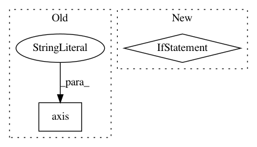

1fe68f56e51996417f982ce0a9c487f64a3b2158,src/skmultiflow/visualization/evaluation_visualizer.py,EvaluationVisualizer,__configure,#EvaluationVisualizer#,145
Before Change
plot_tracker.data["model_size"] = [0.0 for _ in range(self.n_models)]
plot_tracker.sub_plot_obj.set_title("Model size (MB)")
plot_tracker.sub_plot_obj.axis("off")
self._update_model_size_annotations(plot_tracker.sub_plot_obj,
plot_tracker.data["model_size"])
else:
After Change
if constants.DATA_POINTS not in self.metrics:
plt.xlabel("Samples")
if constants.RUNNING_TIME in self.metrics or \
constants.MODEL_SIZE in self.metrics:
self._update_time_and_memory_annotations(memory_time)
self.fig.subplots_adjust(hspace=.5)
self.fig.tight_layout(rect=[0, .04, 1, 0.98], pad=2.6, w_pad=0.5, h_pad=1.0)
def _set_fig_legend(self, handles=None):
In pattern: SUPERPATTERN
Frequency: 5
Non-data size: 2
Instances
Project Name: scikit-multiflow/scikit-multiflow
Commit Name: 1fe68f56e51996417f982ce0a9c487f64a3b2158
Time: 2018-10-15
Author: saulomastelini@gmail.com
File Name: src/skmultiflow/visualization/evaluation_visualizer.py
Class Name: EvaluationVisualizer
Method Name: __configure
Project Name: danforthcenter/plantcv
Commit Name: 4da4eb2efc5aebbdd83fae53fb56c720fffa6127
Time: 2015-08-19
Author: maliadong@gmail.com
File Name: lib/plantcv/analyze_color.py
Class Name:
Method Name: _pseudocolored_image
Project Name: philipperemy/keras-activations
Commit Name: 8a5a6993cec37c98e823d251febcd0b91089bd44
Time: 2019-03-17
Author: 28253514+Stochastic13@users.noreply.github.com
File Name: keract/keract.py
Class Name:
Method Name: display_heatmaps
Project Name: theislab/scanpy
Commit Name: 2ea9f836cec6e12a5cdd37bc4a229d4eadf59d37
Time: 2020-07-31
Author: fidel.ramirez@gmail.com
File Name: scanpy/plotting/_stacked_violin.py
Class Name: StackedViolin
Method Name: _make_rows_of_violinplots
Project Name: gboeing/osmnx
Commit Name: 1e6a99d900da6a9451bfc5ae7f1a7061b29a4686
Time: 2020-06-10
Author: boeing@usc.edu
File Name: osmnx/plot.py
Class Name:
Method Name: _config_ax